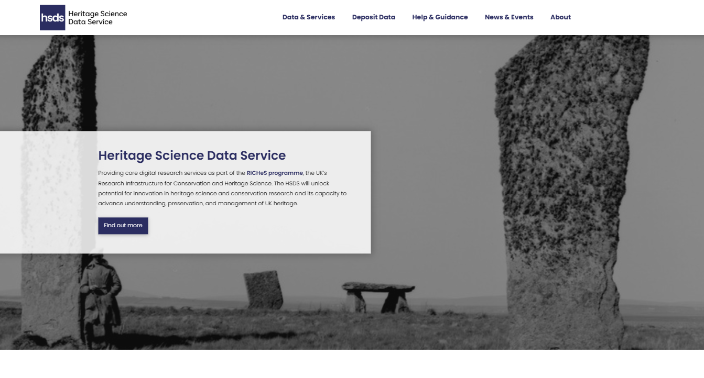

Training School Programme
The training school will take place over five days, beginning with structured teaching and hands on activities and allowing time towards the end of the week to discuss how to apply these good practices to the applicants own circumstances.
This page provides the preliminary programme for the training school, including the topics covered. Further details will be added below as topics and events are finalised.
🗓️ Schedule
Training begins each day at 9.30am and finishes at 4pm. Coffee breaks will take place in the ADS Offices. Lunch is not provided but there are a number of cafes and restaurants are in close proximity.
Monday 10th November - Introduction
- Tour of Kings Manor and the ADS Offices
- Welcome - Outline of Training Programme
- Introduction to the ADS
- Collection Highlights from the ADS
- Attendee introductions
Tuesday 11th November - Data Management
- Open Research and Cultural Heritage
- The FAIR and CARE data principles
- An Introduction to Data Management
- Data Management Plans
- The Importance of Metadata
- Interactive learning session - Metadata
- Case Study: The CHERISH Project
Wednesday 12th November - Digital Preservation and Quality Assurance
- An Introduction to Digital Preservation
- Workflows for Archives - Tour of the ADS archiving workflow
- Digital Preservation Coalition - Rapid Assessment Model
- File Formats - Migration and Normalisation of Files
- Selection and Retention Strategies
- Data Storage and Backup
Thursday 13th November - Dissemination and Data Reuse
- Archive Interfaces
- Communication and Dissemination
- Disseminating Research and Data - A Case Study from the ADS
- Designing a dissemination plan
- Facilitating Data Reuse
- Digital Publication
- Identifying objectives for One on One Sessions
🧑 Friday 14th November - One-to-one sessions with experts from the ADS
Participants will be matched with an appropriate expert from the ADS to discuss their specific needs and requirements for their organisation or research project. We recommend that each participant come to the training school with a specific requirement in mind, however, we can also help to provide support during the training school.
Keynote lecture
A keynote lecture will take place on Wednesday, 12th November at 4:00 pm, followed by a social event.
Introducing the Heritage Science Data Service: Unlocking potential for innovation in heritage science and conservation research
Dr Nicky Garland - Training and Communications Manager, ADS/HSDS
